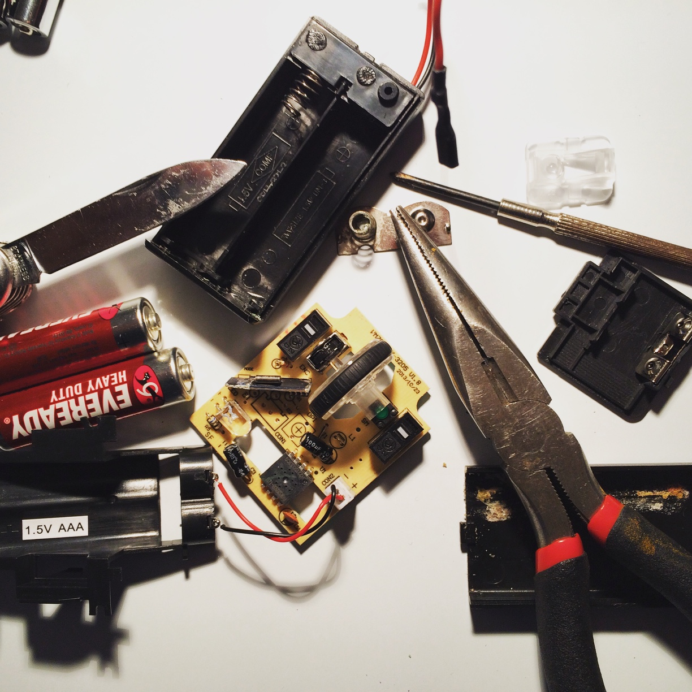

Geeking Out: A How-To Guide
When I’m tired, stressed, or looking for a way out from the challenges of life and labour, I turn to my hobbies. Having a hobby is a productive act: not only does it relieve stress, but it also allows you to learn, and more prominently, helps you grow.
Sport’s a great example of a hobby (that my parents wanted me to do). But as a kid, I never really fit into the sports scene. The idea of sweating it out “for fun” didn’t fascinate me until my late teens. Instead, I grew up indoors, buried in books, films, gadgets and art.
I grew up to hobby as a geek. But what does it mean to grow up as a geek, and how does it work? Well...
Step one: watch a lot of movies. Movies delight and engage people more than books can. Movies bring people away from the world around them, and take them to places unimaginable. They’re a visual spectacle— and films have mesmerised me ever since I first saw a lightsaber.
Here’s the thing about movies: behind all that glitz and glamour, there’s a story to be told and passed on to you. When Yoda sermons Luke about trusting himself through The Force, he's actually giving valuable life lessons. Films bring you experiences— and you learn from those stories.
Step two: play with a lot gadgets. Video games are one thing, but dismantling calculators is another. Gadgetry is the cornerstone of modern technology: to be a technology enthusiast is to be an advocate for the future.
For the uninitiated, it can be puzzling to fall in love with software and circuitry. But here's a speed-date tip: watch how a watch works. It's amazing to see that something seemingly magical is merely wit at work.
To solve complex problems, you break it down into smaller, more manageable chunks. The intricate, trivial challenges thrown by modern tech become the stepping stones for the far greater challenges in life.
Step three: art. Lots of art. This last one's a no-brainer— semi-literally. With all the knowledge gained from the lore of films and tech, art's a great way to experiment and explore yourself.
Art is everywhere. Make music, write books, direct a film, build a clock— what you make is what you've learned.
In middle-school nomenclature, being a geek means getting so lost to fantasy to the point of obsession. (It’s a little exaggerated, but I can agree with that). However, I think being a geek means much more— and I've learnt so much growing up as one.
I don't believe that to hobby as a geek is about ridding yourself from reality. I believe that to geek out is to observe, interpret and understand problems from a different view— a “balcony” view (Heifetz, Grashow & Linsky 2009).
It's like Jedi training, but for life...
References:
- Heifetz R, Grashow A & Linsky M, 2009, The practice of adaptive leadership: tools and tactics for changing your organization and the world, Harvard Business Press, Boston Massachusetts